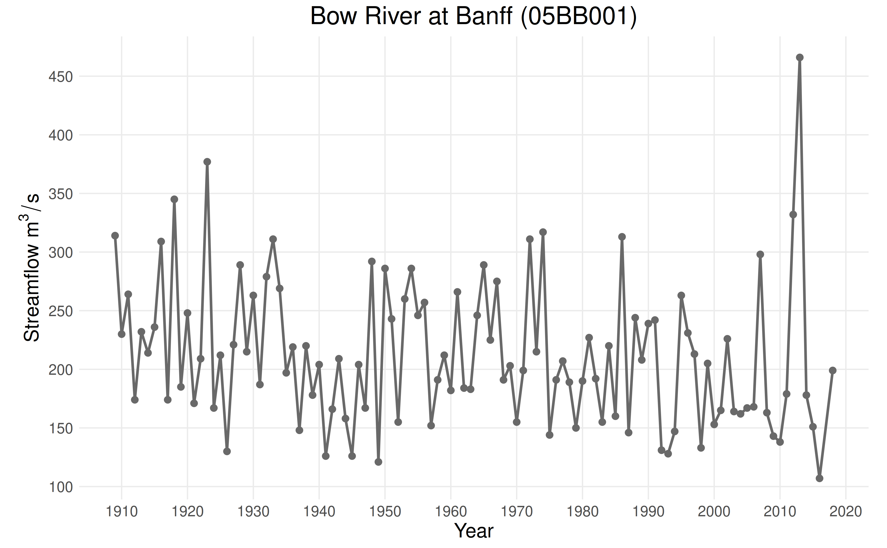

Using Wrapper Functions for Framework Orchestration
Source:vignettes/wrapper-functions.Rmd
wrapper-functions.RmdThis vignette demonstrates how to use the high-level wrapper
functions framework_eda, framework_ffa, and
framework_full to perform a complete flood frequency
analysis of a dataset under the assumption of nonstationarity. Readers
unfamiliar with the FFA framework should first consult the other
vignettes.
Case Study
This vignette will explore data from the Bow River at Banff
(05BB001), a station in the Reference Hydrometric Basin Network. The
station is unregulated and undeveloped, which suggests that trends in
annual maxima are caused by changes in climate as opposed to changes in
land use or cover. Data for this station is provided as
CAN-05BB001.csv in the ffaframework
package.
library(ffaframework)
df <- data_local("CAN-05BB001.csv")
head(df)
#> year max
#> 1 1909 314
#> 2 1910 230
#> 3 1911 264
#> 4 1912 174
#> 5 1913 232
#> 6 1914 214
plot_ams_data(df$max, df$year, title = "Bow River at Banff (05BB001)")
Exploratory Data Analysis with framework_eda
Exploratory data analysis, the first module in the FFA framework,
identifies change points and nonstationary trends in the data. The
entire module is orchestrated by the framework_eda wrapper
function, which takes the following arguments:
-
data: The annual maximum series observations. -
years: The corresponding vector of years. -
ns_splits: A list of years used to split the data prior to trend detection. -
generate_report: IfTRUE, a report will be generated based onreport_pathandreport_formats. -
report_path: The directory where the report will be saved. -
report_formats: A list of file formats ("md","pdf","json", or"html") for the report.
The framework_eda function also returns a list of
recommendations, including an approach (either S-FFA, NS-FFA, or
piecewise NS-FFA), a list of split points, and a list of nonstationary
structures.
results <- framework_eda(df$max, df$year, generate_report = FALSE)
print(results$eda_recommendations)
#> $approach
#> [1] "Piecewise NS-FFA"
#>
#> $ns_splits
#> [1] 1974
#>
#> $ns_structures
#> $ns_structures[[1]]
#> $ns_structures[[1]]$location
#> [1] TRUE
#>
#> $ns_structures[[1]]$scale
#> [1] FALSEFrom the eda_recommendations item, we can see that the
FFA framework recommends a split point in 1974. Since we did not use the
ns_splits argument, trend detection was run on the complete
time series. A monotonic trend in the location was identified over this
period.
Selecting Split Point(s)
The change point detection vignette discussed multiple criteria for selecting a split point. The first and most important criteria is that there is a physical justification for the split point. For this case study, there is no physical justification for a split point since the basin is unregulated.
However, in cases where we have less information, it is often useful
to investigate the results of the Pettitt and MKS tests more carefully.
The framework_eda function allows us to do this by (a)
reading the report, or (b) using the submodule_results
object. The submodule_results object is a list with two
elements: the results of change point detection and the results of trend
detection.
pettitt_results <- results$submodule_results[[1]]$tests$pettitt
mks_results <- results$submodule_results[[1]]$tests$mks
plot_pettitt_test(pettitt_results)
plot_mks_test(mks_results)From these plots, we can see that the change point in 1974 was identified by the Pettitt test, and that this change point is barely above the significance threshold.
Flood Frequency Analysis with framework_full
Using the results of EDA and our knowledge of the station, it is
clear that a nonstationary approach with no split points and a trend in
the location parameter is the best model for this dataset. To perform
FFA, we can either use the framework_ffa function (which
will only perform FFA) or the framework_full
method (which will perform both EDA and FFA). Both functions
take the same arguments as the framework_eda function, with
the addition of ns_structures, which specifies the
nonstationary model structure for each homogeneous subperiod. In this
case, we have decided not to split the data, so
ns_structures will consist of a single list describing the
model structure for the entire time series.
This vignette will use the framework_full wrapper
function to run the complete FFA framework and generate a report. The
framework_full wrapper function returns a list with the
following three items:
-
eda_recommendations: The recommended approach, split points, and model structures from EDA. -
modelling_approach: The approach, split points, and model structures used for FFA. -
submodule_results: The results of EDA (change point detection and trend detection) and FFA (distribution selection, parameter estimation, uncertainty quantification, and model assessment).
framework_full(
df$max,
df$year,
ns_splits = NULL,
ns_structures = list(list(location = TRUE, scale = FALSE)),
generate_report = TRUE,
report_path = "~",
report_formats = "html"
)Note: The code snippet shown above was run outside of the vignette environment to reduce compilation time. The resulting report can be found here.